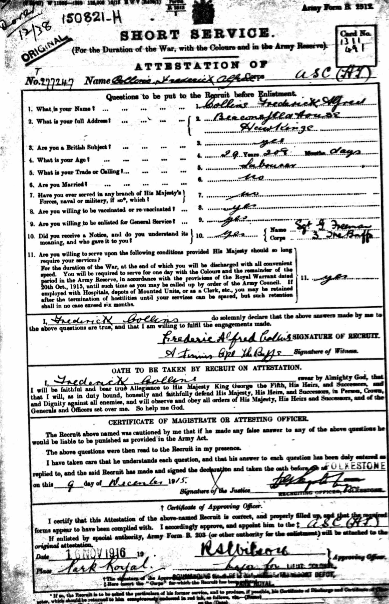

Frederick Alfred Collins 1886 - 1972
[ Home ] | [ Calendar ] | [ Surnames Index ] | [ Errors ] | [ Family History ]A labourer and the child of William Collins (an agricultural labourer) and Ann Ralph, Frederick Collins, the second cousin twice-removed on the father's side of Nigel Horne, was born in Alkham, Kent, England on 16 Feb 18861,2,3 and. He married Helen Kingsmill (with whom he had 1 surviving child, ) in Folkestone, Kent, England on 29 Feb 19164. On 5 Apr 1891, he was living at Chalkshole Green in Alkham1.
He died on 18 Jun 1972 at St Marys Hospital, Lyminge, Kent3 and was buried at Hawkinge Cemetery, Hawkinge, Kent on 23 Jun 1972 (a drizzly day).
Parents
- William
- Ann Epps was born in 1859
Citations
- 1891 England, Wales & Scotland Census - Findmypast (was age 5 and the son of the head of the household)
- England & Wales births 1837-2006 - Findmypast
- England & Wales deaths 1837-2007 - Findmypast
- England & Wales Marriages 1837-2005 - Findmypast
Media
miuk1914a_083897-00786

Frederick Collins WWI Record

Frederick Collins Burial Record

England & Wales births 1837-2006 - BMD/B/1886/2/AZ/000121/029
England & Wales deaths 1837-2007 - BMD/D/1972/2/AZ/000222/020
England & Wales marriages 1837-2005 - BMD/M/1916/1/AZ/000196/029
British Army Service Records - GBM/WO363-4/7266565/59/788
Britain, Campaign, Gallantry & Long Service Medals & Awards - GBM/MCI/0903673
Silver War Badge Roll 1914-1920 - GBM/SILVERWAR/BADGES/796330
Family Tree

Map
Generated by ged2site. Last updated on Jul 3, 2024
Known Issues
Burial date (23 Jun 1972) has no citations
1939 UK register information missing